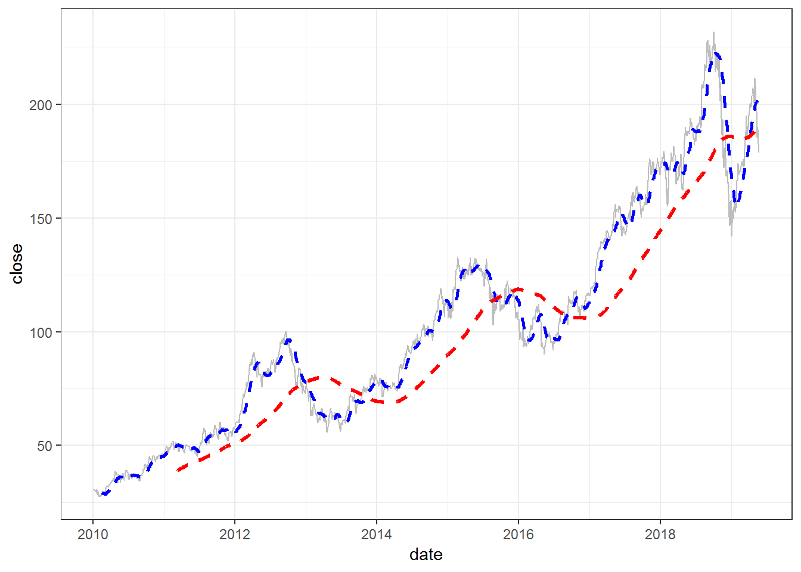

3. Phân tích chuỗi thời gian với tidyquant và timetk¶
Khi phân tích dữ liệu thời gian, cấu trúc chủ yếu của chuỗi thời gian là
định dang xts hoặc zoo. Tuy nhiên, khi phân tích thực tế, phần
lớn ta phải sử dụng định dạng dataframe và với định dang của xts
hay zoo sẽ gây khó khăn trong việc phân tích dữ liệu nhiều chuỗi
thời gian trong dataframe. Package tidyquant và timetk cho phép
phân tích các chỉ số chuỗi thời gian theo phong cách của tidyverse
một cách nhanh chóng
3.1. Lấy dữ liệu với package tidyquant¶
Khi sử dụng tidyquant, ta có thể lấy nhiều định dạng dữ liệu từ sản chứng khoán, thông dụng nhất bao gồm:
- Thông tin công ty trên sàn chứng khoán
- Giá chứng khoán
- Báo cáo tài chính
- Cổ tức
library(tidyquant)
library(timetk)
library(tidyverse)
# Kiểm tra các option lấy dữ liệu
tq_get_options()
## [1] "stock.prices" "stock.prices.japan" "financials"
## [4] "key.stats" "key.ratios" "dividends"
## [7] "splits" "economic.data" "exchange.rates"
## [10] "metal.prices" "quandl" "quandl.datatable"
# Lấy dữ liệu các công ty trên sàn chứng khoán
tq_index("SP500")
Lấy dữ liệu chỉ số chứng khoán
# Lấy dữ liệu stock
aapl_price <- tq_get("AAPL",
get = "stock.prices",
from = "2010-01-01")
aapl_price %>% head
## # A tibble: 6 x 7
## date open high low close volume adjusted
## <date> <dbl> <dbl> <dbl> <dbl> <dbl> <dbl>
## 1 2010-01-04 30.5 30.6 30.3 30.6 123432400 20.3
## 2 2010-01-05 30.7 30.8 30.5 30.6 150476200 20.3
## 3 2010-01-06 30.6 30.7 30.1 30.1 138040000 20.0
## 4 2010-01-07 30.2 30.3 29.9 30.1 119282800 20.0
## 5 2010-01-08 30.0 30.3 29.9 30.3 111902700 20.1
## 6 2010-01-11 30.4 30.4 29.8 30.0 115557400 19.9
3.2. Trực quan hóa với geom_ma¶
aapl_price %>%
select(date, close) %>%
ggplot(aes(date, close)) +
geom_line(col = "grey") +
geom_ma(ma_fun = SMA, n = 30,
color = "blue", size = 1) +
geom_ma(ma_fun = SMA,n = 300,
color = "red", size = 1.2) +
theme_bw()

3.3. Chuyển từ dataframe thành xts¶
aapl_price %>%
timetk::tk_xts(date_var = date) %>%
head
## open high low close volume adjusted
## 2010-01-04 30.49000 30.64286 30.34000 30.57286 123432400 20.30787
## 2010-01-05 30.65714 30.79857 30.46429 30.62571 150476200 20.34298
## 2010-01-06 30.62571 30.74714 30.10714 30.13857 138040000 20.01940
## 2010-01-07 30.25000 30.28571 29.86429 30.08286 119282800 19.98239
## 2010-01-08 30.04286 30.28571 29.86572 30.28286 111902700 20.11524
## 2010-01-11 30.40000 30.42857 29.77857 30.01572 115557400 19.93779